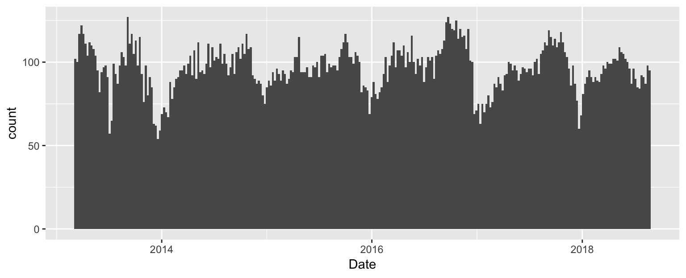
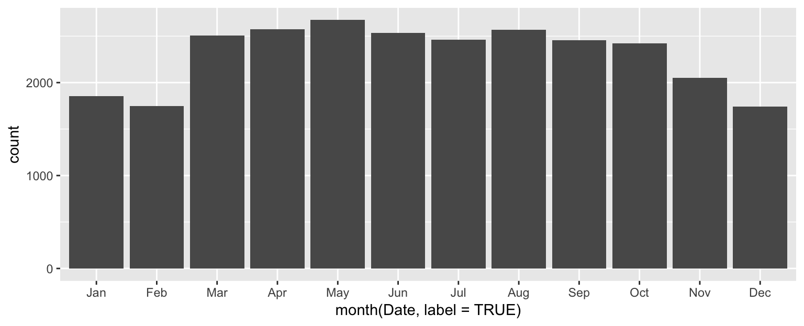

DS 202 - Date and Time
Yumou Qiu
Working with date and time
lubridate package
- package for working with dates and times
- defines different classes of time: instants, periods, intervals, durations
- defines converter and accessor functions, enables time calculus
Converter functions and instants in time
- time instants: one (absolute) moment in time, e.g.
now(), Jan-1-2000
- easy-to-use converter functions:
- date:
ymd, mdy, dmy, …
- time:
hm, hms, …
- date & time:
ymd_hms, mdy_hm, …
- order of letters determines how strings are parsed
- separators are automatically determined, then assumed to be the same
## [1] "2018-03-01"
## [1] "2018-01-03"
Your Turn

- Create date objects for today’s date by typing the date in text format and converting it with one of the
lubridate converter functions.
- Try different formats of writing the date and compare the end results.
Accessor functions
- accessor functions:
year, month, week, wday, mday, yday, hour, minute, …
- accessor functions can also be used for setting elements of date and time, e.g.
hour(x) <- 12
Examples:
## [1] 10
wday(now(), label = TRUE)
## [1] Tue
## Levels: Sun < Mon < Tue < Wed < Thu < Fri < Sat
Intervals and Durations
- Intervals have a start and an end date/time: absolute difference
- Durations are potentially of relative length (months, leap year, leap second, …)
end_date <- now()
span <- end_date - years(1)
span
## [1] "2017-10-23 10:17:18 CDT"
## [1] "2018-10-13 10:17:18 CDT"
Example: Movies
The date variable can be treated as numeric variables.
library(classdata)
summary(box$Date) # date variable: allows date calculus
## Min. 1st Qu. Median Mean 3rd Qu.
## "2013-03-08" "2014-07-25" "2015-12-04" "2015-12-01" "2017-04-14"
## Max.
## "2018-08-24"
Example: Movies (cont’d)
The date variable can be treated as numeric variables.
library(tidyverse)
box %>% ggplot(aes(x = Date)) + geom_histogram(binwidth=7)

Example: Movies (cont’d)
Is there a seasonal effect in the number of movies in the box office?
library(lubridate)
box %>% ggplot(aes(x = month(Date, label=TRUE))) + geom_bar()

Your Turn (10 min)
- inspect the
budget data set from the classdata package,
- make sure the variable
Release Date is a date format,
- plot a histogram of the variable.
- merge (
join) budget and box office data (by movie name)
- is the time between the release of a movie and the date is equal to the number of weeks in theaters?